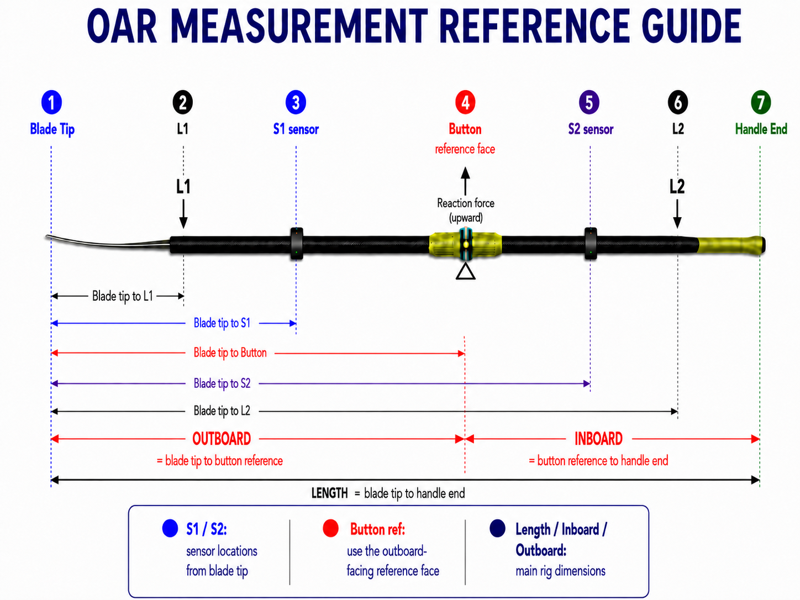

Known-weight oar calibration
Measure the shaft’s stiffness constant, then use it with the current oar geometry to calculate Moment/Bend Factor.
Prepare the setup
For the active recording oar, open Oar Settings → Calibrate Oar Stiffness. A calibration performed in Manage oars is saved to that managed oar separately.
- Connect both sensors and complete or verify sensor alignment.
- Confirm sensor positions, inboard, outboard, overall length, load/support positions and the shaft profile.
- Enter the known weight in the units shown by the app.
- Place the oar on stable supports and use Tare with no calibration load.
- Apply the weight at the recorded load point and allow readings to settle.
- Review the measured bend and calculated stiffness, then save the result with the correct oar.
Movement of a support, mount or load changes the test geometry. Follow the setup diagram and app prompts for the selected oar type.

Use consistent reference points
The seven reference points are Blade Tip, L1 load point, S1 sensor, Button reference face, S2 sensor, L2 support point and Handle End.
Measure longitudinal positions from the blade tip toward the handle. For the illustrated fixture, the required order is Load L1 < Outboard < Support L2. The weight and supports must match the positions entered in the app.
Check the saved result is active
The test measures Cperm. Current dimensions and sensor positions adapt it into Moment/Bend Factor (N·m/°). Check the source shown in Active Oar details.
Turn off a direct MBF override to use the calculated factor. If manual Cperm is active, turn that override off to use the newly measured Cperm. Both overrides preserve the saved calibration; they change which value is used.
You can reuse Cperm for the same shaft and shaft model after updating dimensions. A new set of dimensions alone cannot supply an unknown stiffness constant.